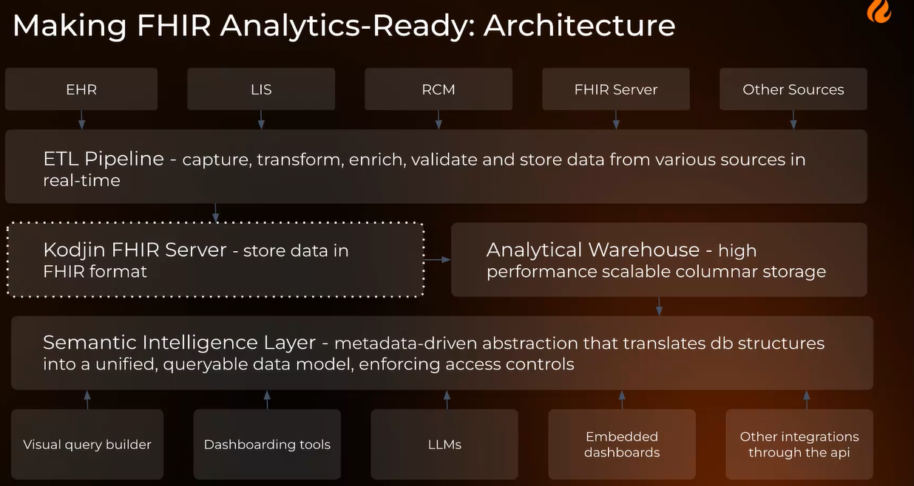

Møte 36 i FHIR fagforum
- Dato: 2026-08-26
- Klokkeslett: 1300-1500
- Ca 49 deltakere + noen fysisk NHN og Helsedirektoratet
FHIR fagforum (FFF) er et åpent forum om bruk og implementering av HL7 FHIR i Norge. FFF er åpent for alle.
Agenda: Behandlingsplaner og semantic layer
- Velkommen, Thomas og Info fra HL7 Norge, Øyvind Aassve (10 min)
- Behandlingsplaner (og litt måledata), Sigurd Ringbakken NHN (30 min)
- The Semantic Foundation for AI-Ready Healthcare Data, Kseniia Nikolaienko, Edenlab (30 min)
- Nordic update: Sweden, Mattias Colliander, HL7 Sweden (20 min)
- Informasjon om Norwegian FHIR Hackathon 2026 og Danish Hackathon 2026, Thomas T Rosenlund og Thea Mentz Sørensen, Helsedirektoratet / Medcom (10 min)
- Eventuelt
Presentasjoner
- FHIR fagforum intro
- Behandlingsplaner (og litt måledata)
- Flere presentasjoner kommer snart…
HL7 Norge informasjon
- Hackathon 2026 i november
- Ballot EU Patient summary - pasientoppsummeringer
- Connetathon i Rockwille USA
- Europeisk WGM i midten av november - sponset av HL7 Norge for norske deltakere, EHDS
- Kurs i EHDS før sommeren - svært vellykket
Pasienten planer
Datadelingstjenester som utvikles i NHN sammen med sektoren. Tormod, Sigurd, Michal og
- Deling og oppfølging av egenbehandlingsplan mellom lege sykehus, innbygger og fastlege
- Deling av behndling- og egenbehandlingsplan som er et viktig udekket samhandlingbehov for helsetjenesten.
- Prioriterer aktører som har reelle behov.
- MILA - samarbeid om pasienter som har DHO, fase 1
- 6 fritekstfelter og trafikklysmodell
- Strukturerte data er det lite av i første fase.
- Aktiv plattformen
- Aktiv med artrose
- IHT integrerte helsetjenester
- Mer struktur, mer ansvarsoverganger og samhandling
- Utviklingsløpet - problemstillinger for prosjektet som er under arbeid.
Veiskille hvor det må gjøres noen valg
- Ønsker standardisering og håper at vi kan få til diskusjon og sparring for veien videre.
- Hva er pasientens planer?
- Personas: Oddfrid
- Sammensatte behov og flere deler av helsetjenesten er involvert.
- Treningsopplegg fra fysio
- Koordinering er utfordrende, mange modus for kommunikasjon
- Pasientens planer skal kunne fungere som et nav for behandlingsplan.
- DBEP er forsøkt før mellom pasient og fastlege gjennom kjernejournal
- Versjon 1 er rigget bredere i utprøving med både primær og spesialist.
- CarePlan - ble forsøkt brukt i DBEP - inneholdt ikke trafikklysmodellen
- Datamodell ble 6 fritekstfelter og mål for behandling for å sjekke behov
- NHN har modellert hendelser med operasjoner som skal forenkle flyten og bruken av API’ene.
- Eksempel på hendelser og operasjoner i et tilfelle for oppdatering, stateless
- Koblede FHIR ressurser
- extensions
- CarePlan?
- Fasade?
Edenlabs
Kseniia Nikolaienko - Head of Data and AI at Edenlab
We have all of this FHIR data - can vi just point an LLM at it?
- Properties like extendability and references makes it hard to use for analytics.
- FHIR designed as an exchange format - not analytics.
- Data is available -
- Between FHIR and LLM - Structural layer, semantic layer, privacy architecture
Structural layer
Flattended data
- Streaming change capture - event propagate as it happens
- Transformation teplates - flatteened resources into rows - declarative - configuration not code
- Enrichments - references resolved, codes mapped and groupted displays and synonyms, terminology service inside pipeline
- Analytical store - columnar, pupulation scale, full history is kept
Semantic layer

- Architecture - Validate etc
- Semantic layer - where meaning lives -
- Concepts, not columns - makes answers deterministic and explainable
- Definitions carry their logic -
- Tractable to build
- Governed and versioned
- The Semantic layer Compiles the queries into SQL
- From Question to governed query
- User can check the interpretation of the question.
- Definitions should be well defined, written down (explicit) and agreed upon
Privacy layer
- Privacy by design
- The LLM sees only semantic catalog: concept names, definitions and relationships - never touches the data directly
Live Demo
- Answers complex questions and produces answers fast.
Summary
- Exchange ready is not AI-ready
- Semantic layer is safety mechanism (and quality)
- Separate reasoning from data - the model only sees metadata; the engine sees patient data inside your governed estate
- Privacy by design is an archtecture, not a policy document.
Questions
- Have you considered using CQL for these semantic query definitions?
- Considered using CQL - several issues no implementation that supports full CQL logic, does not exist yet.
- Join was difficult - several technical issues with it
Status from HL7 Sweden and E-health agency
Nordic update: Sweden, Mattias Colliander and Rebecka Carls
- E-health agency
- National digital infrastructure for healthcare
- Use of the infrastructure in Sweden
- Implementation guides on Simplifier
- Find all data for a patients, distributed between all healthcare providers (no central database of data).
- Endpoint
- Organization
- API specs
- All IG’s include actor and capabilities for the API
- National terminology server
- Autoring - local terminology
- Distribution of SNOMED, NPU etc.
- Web access
- Long end goal: National ecosystem of teminology services
HL7 Sweden
- IG’s R5
- Investigating to sertify for the community process
- Nordic terminology server - established by Sweden for all of the Nordics tx-nordics.fhir.org/fhir/r4
- FHIR tx ecosystem - is included in tx.fhir.org lookup
Questions
- How is data reconciled - assumption of each endpoint always returning distinct data (apart from obvious ones like Patient etc.) feels fundamentally wrong …
- a whole workshop…
- So Sweden doing R5 ? AFAIK currently no certainty of EHDS moving forward from R4.
- Yes, we are using R5 for the API:s of the components in the national digital infrastructure
Hackathon information (Denmark/Norway)
- Informasjon om Norwegian FHIR Hackathon 2026 og Danish Hackathon 2026, Thomas T Rosenlund og Thea Mentz Sørensen, Helsedirektoratet / Medcom.